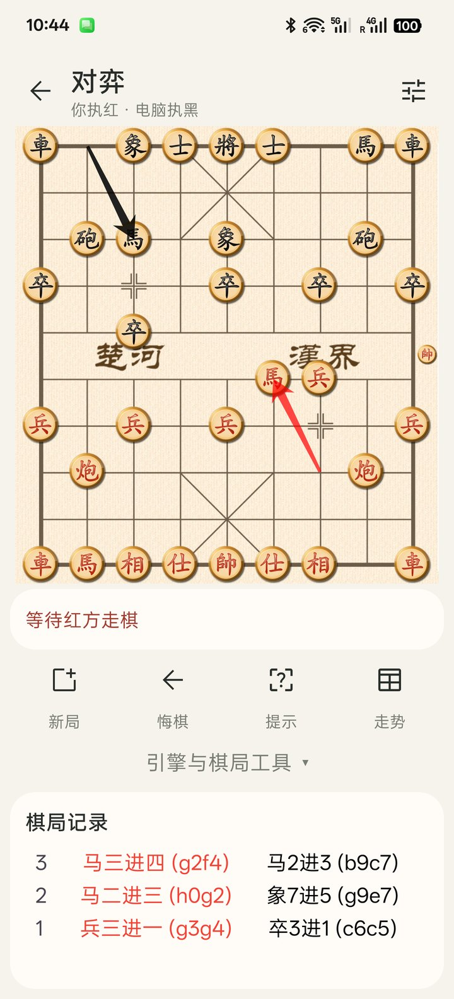
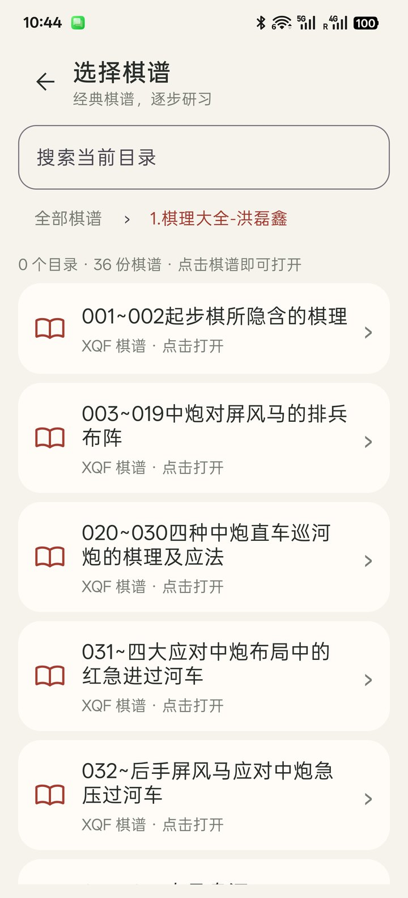
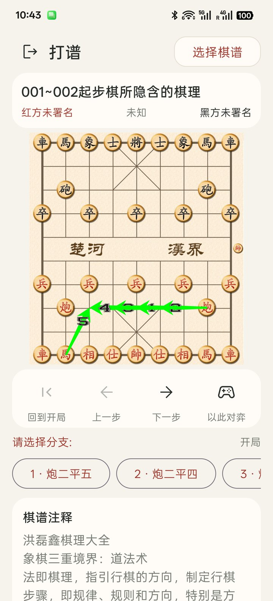
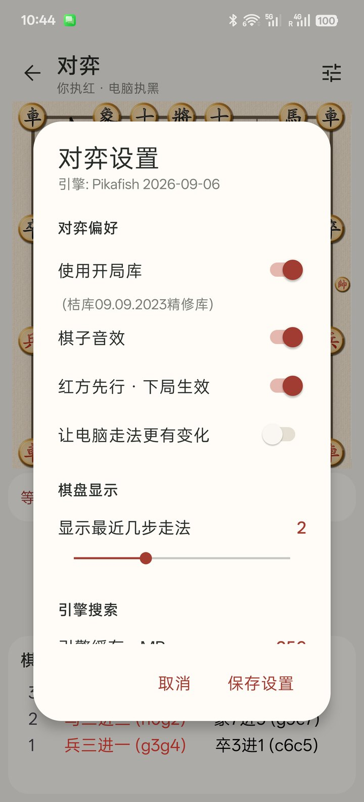

使用帮助
从第一步，到下一局
对弈、分析和打谱的常用操作，都在这里。
01 / 开始对弈
打开首页，选择「对弈」
进入棋盘后，点击己方棋子，再点击目标位置落子。选中棋子时会显示可移动位置，棋盘箭头显示最近的行棋轨迹。
- 新局 ：重新开始一局。
- 悔棋 ：撤销之前的着法。
- 提示 ：请求引擎推荐候选着法。
- 走势 ：查看局势评估曲线。
点击「引擎与棋局工具」展开更多操作，包括执棋模式、退一步、电脑走棋、自动走棋、候选着法、立即落子、导入棋局和复制棋局。棋局记录保留在页面下方。


02 / 提示与分析
看看引擎会怎么走
轮到己方时点击「提示」，引擎会计算候选着法，并在棋盘上用带编号的绿色箭头显示。点击对应编号可选择着法，也可以忽略建议，直接在棋盘上落子。
电脑思考或引擎分析时，可使用工具中的「立即落子」结束当前搜索并返回结果。「候选着法」可以帮助你比较不同选择；「走势」显示已有评估的局势变化。
03 / 打谱
找一份棋谱，慢慢读懂它
- 在首页点击「打谱」，再点击右上角「选择棋谱」。首次进入时会准备内置棋谱，请等待完成。
- 打开目录，点击棋谱即可加载。搜索框只筛选 当前目录 中的名称；顶部路径可返回上级目录。
- 使用「下一步」「上一步」和「回到开局」回放。遇到分支时，点击候选着法按钮；更多分支可横向滑动查看。
- 在「棋谱注释」中阅读讲解。分支或注释较多时可以上下滚动页面。
- 点击「以此对弈」，从当前棋谱局面进入对弈模式。




04 / 棋局工具
从一个局面开始
在对弈页展开「引擎与棋局工具」，选择「导入棋局」，在输入框粘贴或填写 FEN 字符串，再确认导入。FEN 用于描述棋子位置与走棋状态。
使用「复制棋局」可复制当前局面的 FEN，方便保存、分享或在反馈问题时提供复现信息。
05 / 引擎设置
找到适合手机的思考节奏
点击对弈页右上角的设置图标，调整新局与引擎选项。
- 红方先行 ：控制新局的先行方，修改后对新建对局生效。
- 开局随机性 ：在最初的 12 步中增加变化，也会降低电脑的棋力。
- 引擎缓存（Hash） ：默认根据应用内存预算设置为 32–128 MB。应结合设备内存调整，过大可能导致应用被系统终止。
- 搜索深度 ：达到指定深度后返回；深度越高通常耗时越长。
- 固定时间 ：按指定时间进行搜索。
- 无限搜索 ：持续分析，直到手动结束搜索。


06 / 常见问题
遇到问题时
引擎走棋太慢怎么办？
降低搜索深度，或切换为较短的固定搜索时间。使用无限搜索时，点击「立即落子」可结束当前搜索。
应该下载哪个版本？
不确定时选择 armv8 通用版。确认设备支持 ARM dotprod 指令时，可尝试 armv8-dotprod 版；如无法正常运行，请改用通用版。两个版本都面向 ARM64 设备，详见 下载页 。
没有网络还能使用吗？
内置引擎对弈、打谱及应用内帮助均可离线使用。启用云开局库时需要网络；打开外部链接也需要联网。
如何反馈问题？
在 GitHub Issues 提交问题，附上应用版本、手机型号、Android 版本及复现步骤。与局面有关的问题，请通过「复制棋局」提供 FEN。